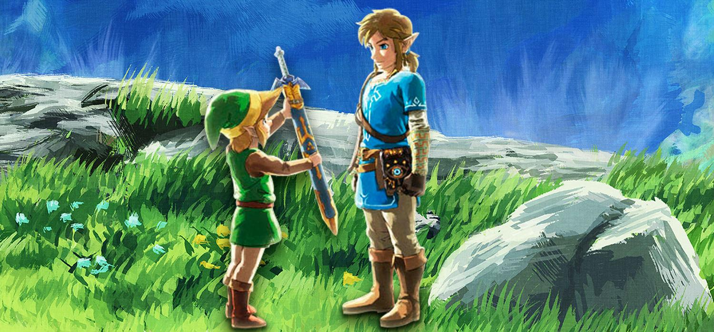

B
ienvenidos a la guía de The Legend of Zelda: Breath of the Wild,
la nueva entrega una saga mítica con más de 30 años de historia,
que en esta ocasión nos lleva hasta un gigantesco mundo abierto,
uno de los más grandes que hemos visitado nunca en un videojuego.
Para que la sensación sea de aventura total, a diferencia de la gran mayoría de juegos actuales en esta aventura no te llevan de la mano, no hay demasiadas indicaciones, consejos o tutoriales, por lo que creemos que esta guía es más útil y necesaria que de costumbre.
Los enemigos por defecto no son conscientes de tu presencia hasta que te ven o te oyen, algo que se advierte con un icono sobre su cabeza. Para evitar hacer ruido y que te vean mueve a Link suavemente con el stick izquierdo, e intenta caminar agachado apretando el stick. También utilizar el entorno para ocultarte, caminando entre la hierba alta.
Cuando asaltes un campamento ten cuidado con los centinelas, que están subidos en unas torres de observación y atentos a todo el que se acerca. Aunque de noche los enemigos están durmiendo, siempre dejan al menos a un centinela despierto y vigilando. Si te ven o te oyen de lejos, un signo de interrogación aparecerá encima de su cabeza, que irá cambiando de color hasta ponerse totalmente rojo, momento en el que te habrán visto definitivamente y darán la voz de alerta.
COMPRAR 